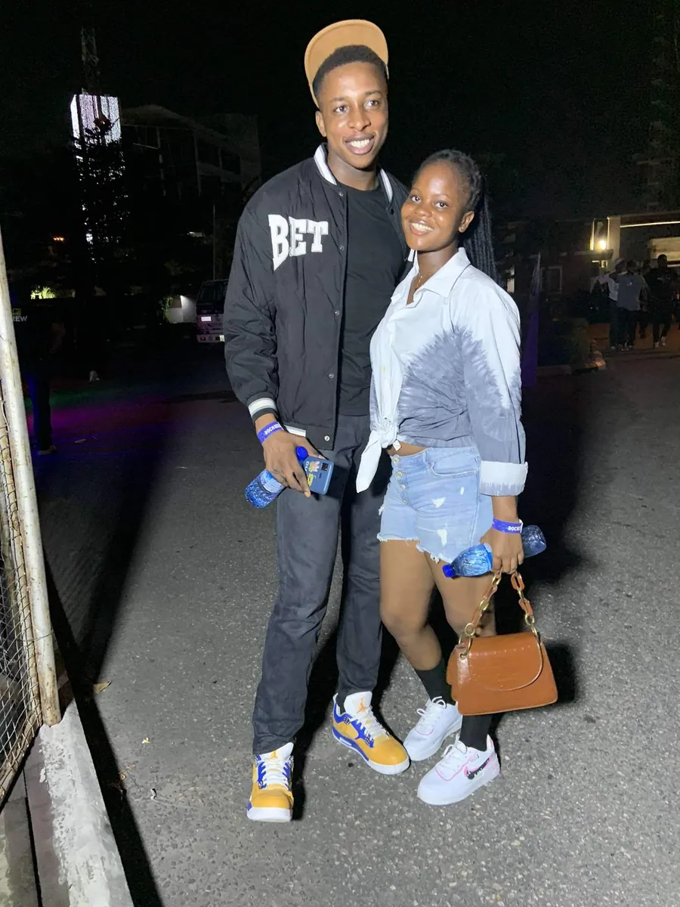
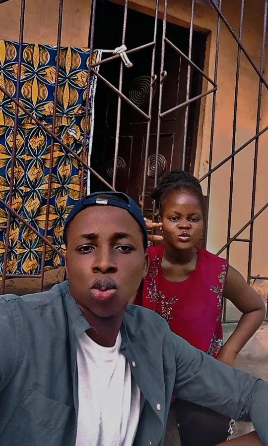
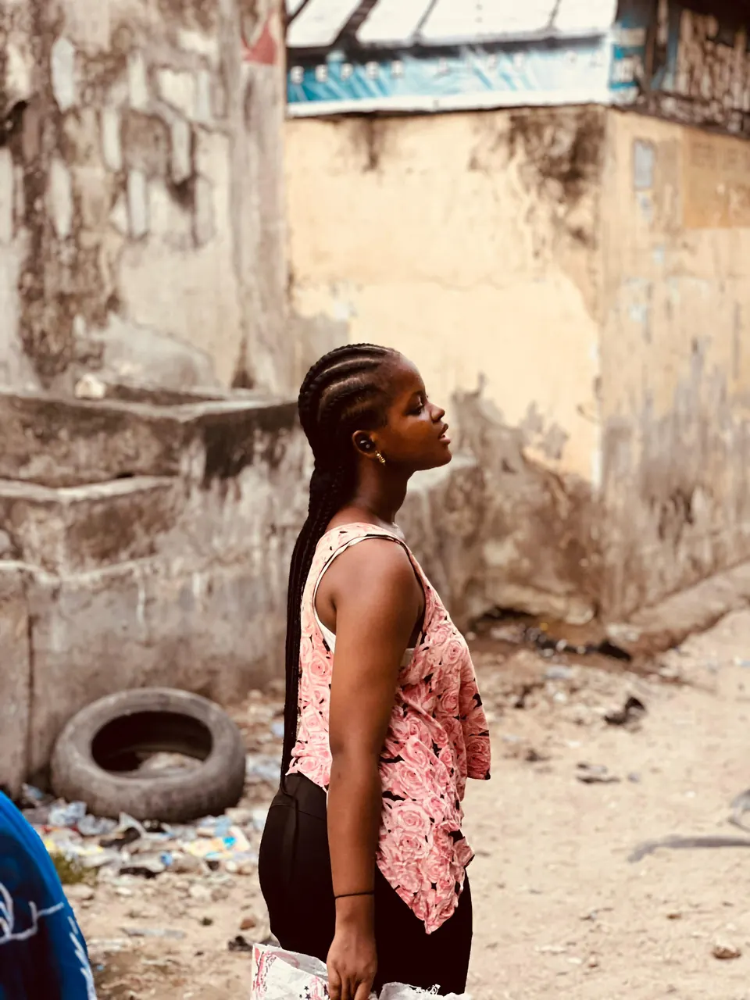
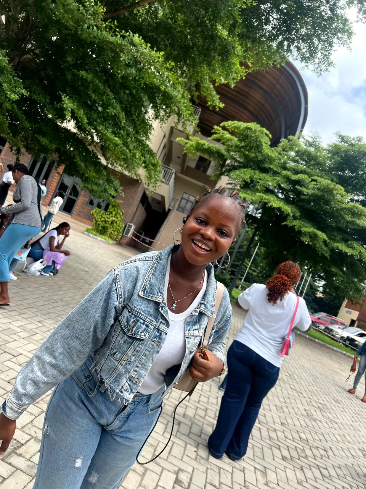
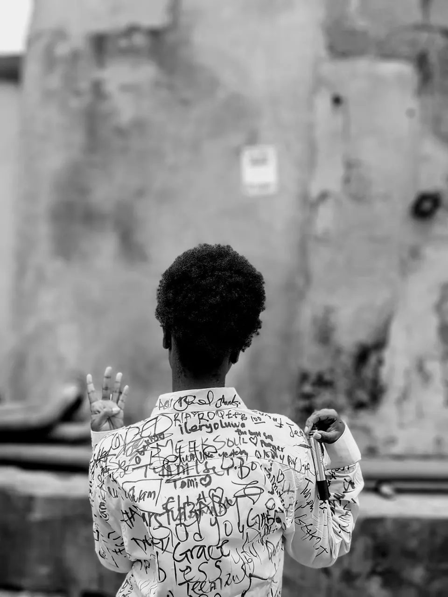
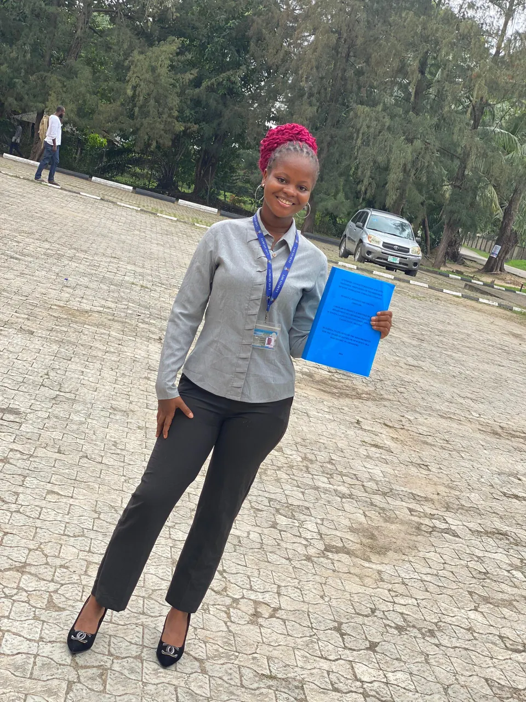

In-flight entertainmentY3-000
ItemTwo years, one video
LengthNever long enough
WarningFeelings ahead
Trains, doughnuts, a night beach, and the end of the campus years
Come, let's walk back through it together.
Before we go any further, let's look back. This is the last two years squeezed into one video. Some of it you'll remember straight away. Some of it we had both forgotten. Press play, turn the sound up, and watch it with me. Then we start Year Three.

December 2022. We went to see Davido again, because he's your favourite and I was not complaining. I wore all black with my brown cap. You wore your adire top, denim and your brown bag. We never planned any of it, and somehow the colours worked anyway. Then we sang. Loud, under the stars, every song word for word, like the whole crowd was just backup for the two of us. I still can't tell you what he wore on stage. I only remember you singing next to me.
One of those Sundays I came to see you at school. We were walking back from church, and I turned the camera on myself and said, in Yoruba, “Sheri? Won tu ti wo mi wa o.” It means, “Can you see? They have brought me here again o.” You didn't even blink. You gave me the side-eye and said, “Like you're not happy to be here.” And that was it, you caught me. Of course I was happy. Those weekends around you were the most peaceful ones I had while we were apart.

Another visit to your hostel, another round of funny faces. I'm in front doing whatever this face is, and you're right behind me doing yours. Nothing was planned. We just sat there being silly. Those visits were the best part of my week, and I started counting down to them on Monday.
Our third anniversary. You wanted cotton candy, and you asked for it very sweetly. (Some people would call it a threat.) But since when does my princess not get what she wants? So there I am, holding a cloud of sugar, trying to look like it was my idea. Then I turned the camera to you and said, “Say cheese.” You said, “Hiiiiii,” with that smile. I could replay that one word all day.
Same day, doughnut time. I told the camera, “Look everyone, I'm about to feed her before she says I don't feed her.” Then I did. You took the biggest bite, and I gave you my best side-eye with a scrunched-up face. You burst out laughing. That's it. That's the whole video. And somehow it's us, completely.
Our first time at the beach, and it was at night. We had actually gone out for a night rave, but it didn't go the way we expected. The beach was close by, so we left the party and walked to the water. Why? Let's just say we're not “beautiful people”, as Ed Sheeran would put it. We were happier on the sand. Cold breeze, dark sea, and the smiles you can see in this video. Best plan B we ever had.

I couldn't leave this one out. By now it's a tradition: one photo of you that is too good to skip. I didn't take this one, so I won't take any credit. I just know a masterpiece when I see one. Side profile, long braids, lost in whatever you were listening to. The most beautiful woman on the entire planet. No exceptions.

Sign-out week had a denim-on-denim day, and I couldn't be there because of work. You didn't let that stop you. You sent so many photos that I lost count, and this one became one of my favourites in my whole gallery. Look how happy you are. I was stuck at work, but it felt like I was right there next to you.

Your sign-out day. Remember Year Two, when you showed up and screamed that your baby was a graduate? Now it was my turn to show up. So I took the last train on the metro the night before, just to be around for the day. And here you are: a white shirt covered in names, four fingers up, a marker in your other hand. I would take that last train again. Some days are meant to be shared.

Your project defense, the last real thing left at the university. Look at that smile. That's relief, pure and simple. It was also a goodbye to the place where our story started, so it felt bitter and sweet all at once. But we couldn't wait to step into the world together, side by side, facing the same storms. And, oh, what storms there have been. We'll get to those soon.
Year Three, closed.
Please fasten your seatbelts. There is a little turbulence ahead.
On to Year Four3 of 5 receipt books